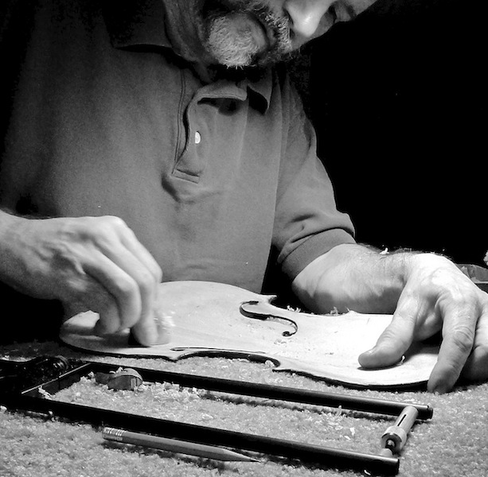
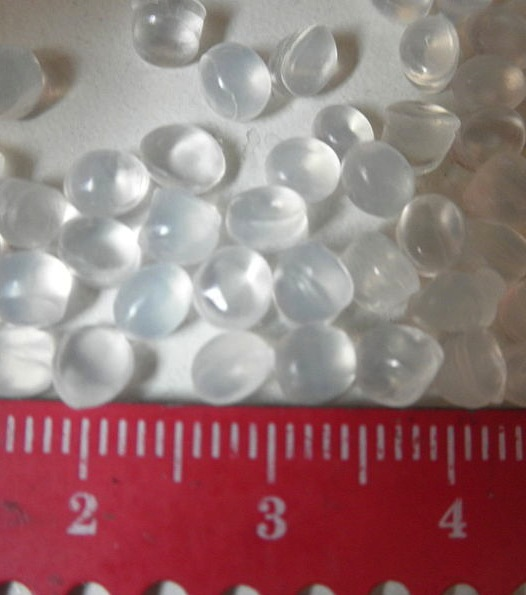
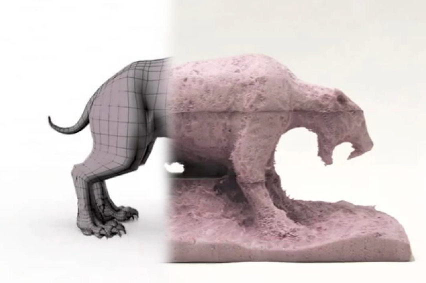
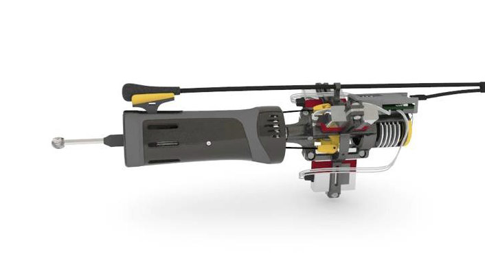
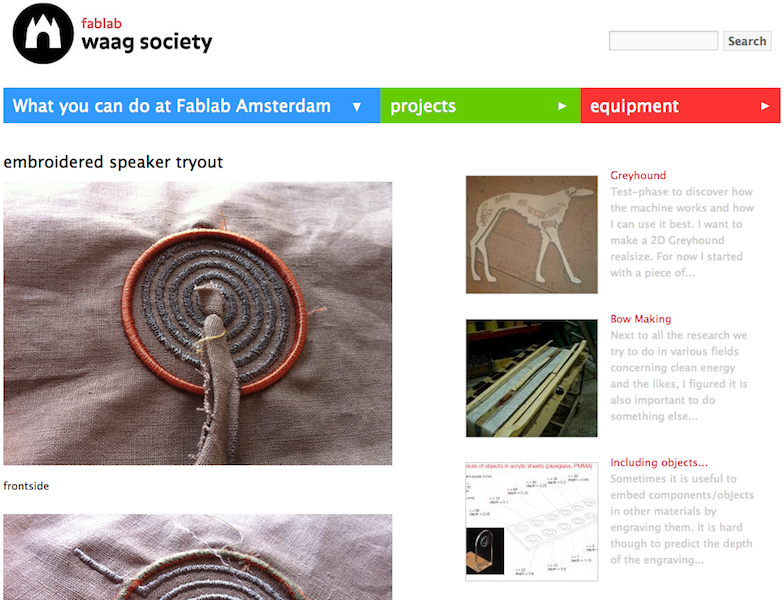
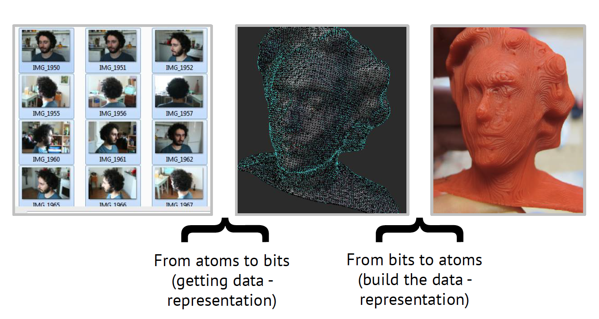
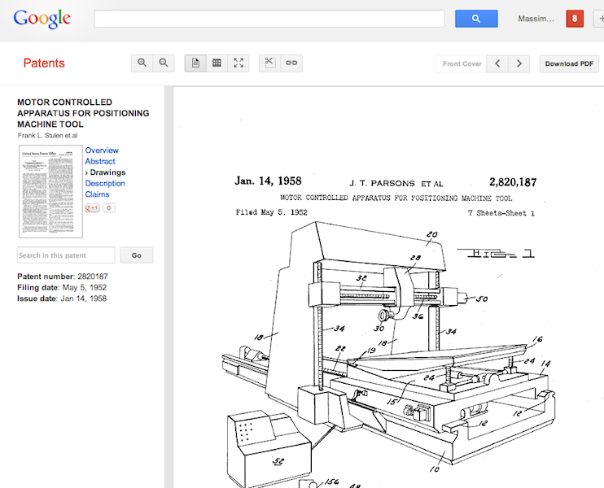
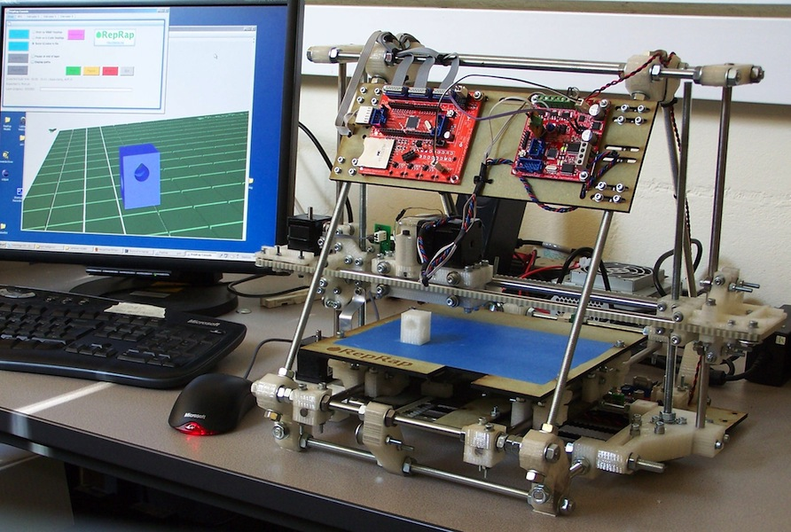
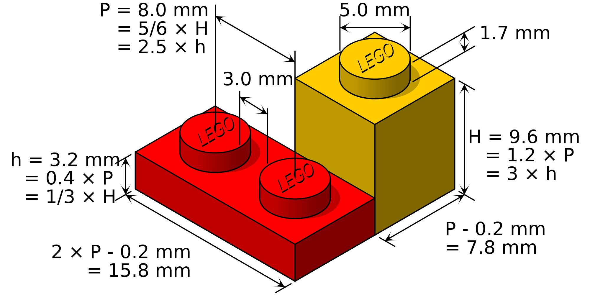
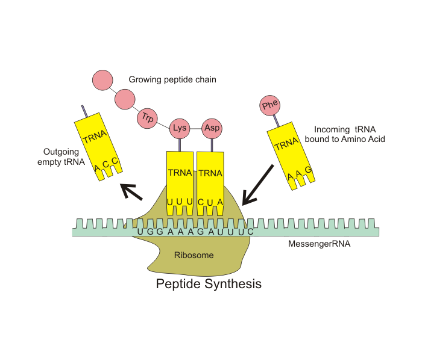

Massimo Menichinelli
Digital Fabrication Studio (25438) v.0.2
01.01 The digital fabrication ecosystem
A Craft project
“This exact material (atoms) and my perception and experience (bits)”

Source: http://www.flickr.com/photos/kellycdb/6168020183/ + http://commons.wikimedia.org/wiki/Category:Wood
An Industrial project
“A standardized material (atoms) described only by numerical values (bits)”
Source: http://commons.wikimedia.org/wiki/Category:KUKA + http://commons.wikimedia.org/wiki/Category:Polyethylene
A digital fabrication (fabbing) project
“My experience, perception and digital information (bits) shape this exact material and its values (atoms)”
Source: http://web.media.mit.edu/~amitz/Amit_Zoran_home_page/the_freeD.html
A digital fabrication (fabbing) project
“... and I will probably design and make my own tools” [metadesign]
Source: http://web.media.mit.edu/~amitz/Amit_Zoran_home_page/the_freeD.html
A digital fabrication (fabbing) project
“... and I will probably design and make my own tools” [metadesign]
Source: http://www.youtube.com/watch?feature=player_embedded&v=TxHiTjapTqg
Bits + atoms = information + materials
Developing projects at the intersections between bits and atoms
Source: http://fablab.waag.org/node/3847
Bits and atoms – two directions
XXXX
Digital Fabrication and bits+atoms: CBA @ MIT

Not the center for rapid prototyping: “investigating the interface between computer science and physical science”
Source: http://cba.mit.edu/ + http://en.wikipedia.org/wiki/Neil_Gershenfeld
Fab.01: Machines attached to a computer
1950s: first computer numerical control (CNC) machines, attached to computers
Source: http://www.google.com/patents?id=rRpqAAAAEBAJ&printsec=drawing&zoom=4#v=onepage&q&f=false
Fab.02: Machines that make machines
2005: RepRap (open source) 3D printer that replicates itself (and that generated an ecosystem of 3D printers)
Source: http://www.reprap.org/
Fab.03: Materials with embedded code
Materials with an embedded code that help shaping them
Fab.03: Materials with embedded code
North Carolina State University: a simple way to convert two-dimensional patterns into three-dimensional (3-D) objects using only light.
Source: http://news.ncsu.edu/releases/wmsdickeyfolding/ + http://www.youtube.com/watch?v=NKRWZG67dtQ
Fab.04: Materials with embedded program
Materials that have code, data and programs for self-manufacturing / auto-assembly.
Fab.04: Materials with embedded program
Materials that have code, data and programs for self-manufacturing / auto-assembly.
Source: http://www.youtube.com/watch?v=Jml8CFBWcDs+ http://www.youtube.com/watch?v=1PSwhTGFMxs
Fab.04: Materials with embedded program
Materials that have code, data and programs for self-manufacturing / auto-assembly.
Source: http://www.ted.com/talks/skylar_tibbits_can_we_make_things_that_make_themselves.html+ http://youtu.be/emW1TQ290ec?t=2m10s + http://www.sjet.us/SJET-MIT.html
Fab.04: coming to the Design world, soon
Even IDEO is already researching how to manufacture products starting from bacteria that create shapes through self-organization.
Basic Slide
Press ESC to enter the slide overview!
Marvelous Unordered List
- No order here
- Or here
- Or here
- Or here
Fantastic Ordered List
- One is smaller than...
- Two is smaller than...
- Three!
<section data-markdown>
## Markdown support
For those of you who like that sort of thing.
Instructions and a bit more info available [here](https://github.com/hakimel/reveal.js#markdown).
</section>
Clever Quotes
These guys come in two forms, inline:
The nice thing about standards is that there are so many to choose from
and block:
For years there has been a theory that millions of monkeys typing at random on millions of typewriters would reproduce the entire works of Shakespeare. The Internet has proven this theory to be untrue.
Pretty Code
function linkify( selector ) {
if( supports3DTransforms ) {
var nodes = document.querySelectorAll( selector );
for( var i = 0, len = nodes.length; i < len; i++ ) {
var node = nodes[i];
if( !node.className ) ) {
node.className += ' roll';
}
};
}
}
Courtesy of highlight.js.
Fragmented Views
Hit the next arrow...
... to step through ...
any type- of view
- fragments
Spectacular image!

Source: http://www.openp2pdesign.org
Thank you!
Any questions?
Massimo Menichinelli
Twitter: @openp2pdesign